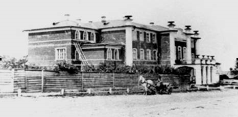
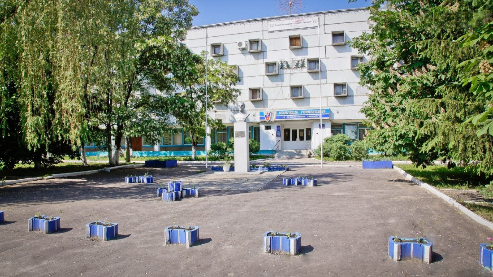

Пензенский колледж информационных и промышленных технологий имеет долгую и славную историю. На сегодняшний день он объединяет два крупнейших учебных заведения области, созданные в трудные, но судьбоносные для нашего государства 30-40-е годы прошлого века.
Пензенскому механическому техникуму Постановлением Совета Министров РСФСР от 28.07.1967 года №557 было присвоено имя Евгения Дмитриевича Басулина. Перед центральным входом в колледж и в здании установлены памятники Герою.
За годы своего существования техникум выпустил тысячи специалистов, чей труд и знания десятилетиями вдыхали жизнь в громаду пензенской индустрии. Механический техникум всегда располагал хорошей материальной базой. В 1984 году из помещения на улице Шмидта техникум был переведен в новый корпус на проспекте Строителей.
Приказом Министерства образования Российской Федерации от 01.01.2001г. №1108 государственное образовательное учреждение среднего профессионального образования «Пензенский механический техникум им. Е.Д. Басулина» переименован в государственное образовательное учреждение среднего профессионального образования «Пензенский техникум управления и промышленных технологий им. Е.Д. Басулина».
Не менее славную историю имеет Учебный комплекс информационных технологий. В тяжелые годы военного лихолетья Приказом Наркомата минометного вооружения СССР №478-К.М. 6 ноября 1942 года был создан Пензенский машиностроительный техникум (ныне- Учебный комплекс информационных технологий). Директором ПМТ был назначен С.П. Березко.
 назад к комплексам